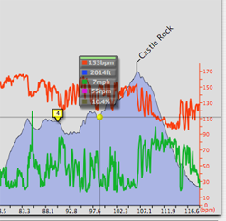

Using the Activity View
The Activity View plots various data streams gathered from your GPS. Each data stream is displayed in a color that can be set via preferences, and each stream can indvidually be turned on and off. To fine tune the display to your liking, click on the disclosure triangle at the lower left of the view. A drawer full of controls appears that controls exactly what is displayed.

See also
How to display heart rate zones
Displaying peak information
Adding markers to an activity
Animation Control
Activity View Topics